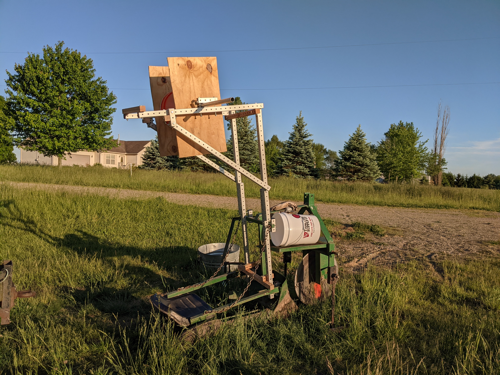

triangles revision 8119
^ Techniques infobox ^^
| image | Triangle.scad.png |
| designers | [[user:tim|Timothy Schmidt]] |
| date | 2018 |
| vitamins | |
| materials | |
| transformations | |
| lifecycles | |
| tools | [[wrenches|Wrenches]] |
| parts | [[frames|Frames]], [[nuts|Nuts]], [[bolts|Bolts]], [[end_caps|End caps]], [[plates|Plates]] |
| techniques | [[tri_joints|Tri joints]], [[layering_frames|Layering frames]] |
| git | |
| files | |
| suppliers | |
Introduction
Rectangles have been the most popular and common geometric form for buildings since the shape is easy to stack and organize; as a standard, it is easy to design furniture and fixtures to fit inside rectangularly shaped buildings. But triangles, while more difficult to use conceptually, provide a great deal of strength.
Triangles are sturdy; while a rectangle can collapse into a parallelogram from pressure to one of its points, triangles have a natural strength which supports structures against lateral pressures. A triangle will not change shape unless its sides are bent or extended or broken or if its joints break; in essence, each of the three sides supports the other two. A rectangle, in contrast, is more dependent on the strength of its joints in a structural sense. Some innovative designers have proposed making bricks not out of rectangles, but with triangular shapes which can be combined in three dimensions. It is likely that triangles will be used increasingly in new ways as architecture increases in complexity. It is important to remember that triangles are strong in terms of rigidity, but while packed in a tessellating arrangement triangles are not as strong as hexagons under compression (hence the prevalence of hexagonal forms in nature). Tessellated triangles still maintain superior strength for cantilevering however, and this is the basis for one of the strongest man made structures, the tetrahedral truss.
Challenges
Tri joints make 90 degree angles easy. Triangles require angles other than 90 degrees.
Approaches


- 3, 4, 5 triangle